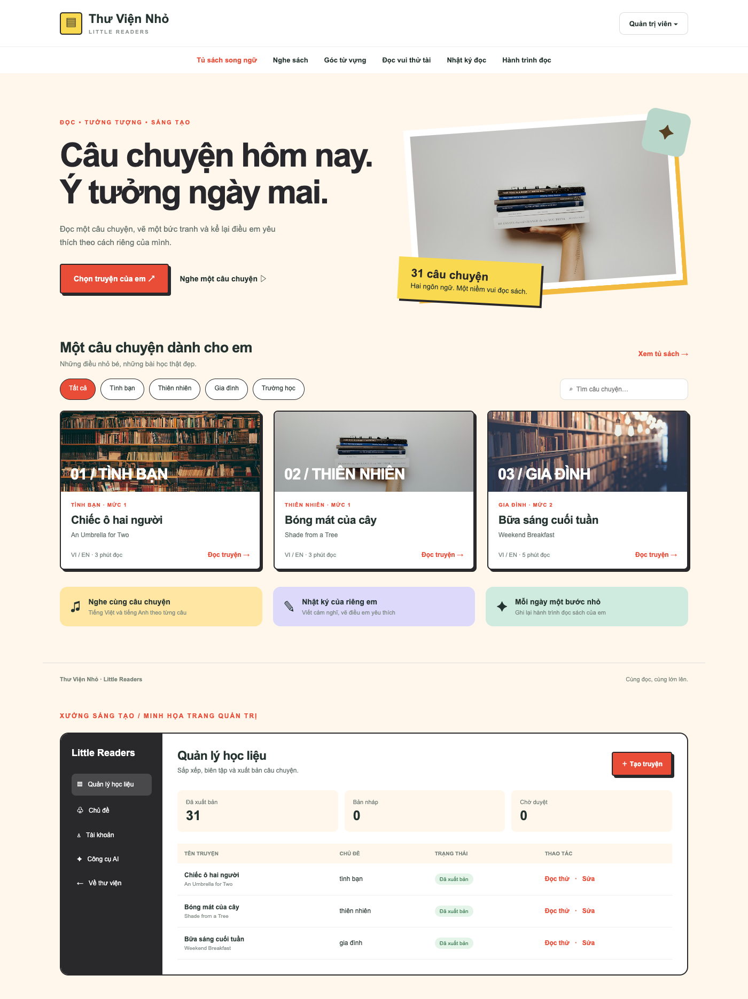

01. Vườn truyện
Ấm áp · Tự nhiên · Gần gũi
Mở bản thiết kế →Mỗi mẫu có trang thư viện và bảng quản trị. Đây là bản thiết kế để lựa chọn; nội dung, số liệu và thao tác minh họa.
Ảnh sách: Unsplash. Các ảnh này minh họa phong cách, chưa phải bìa truyện cuối cùng.
Ấm áp · Tự nhiên · Gần gũi
Mở bản thiết kế →Vui tươi · Sáng tạo · Nổi bật
Mở bản thiết kế →Tinh tế · Thanh lịch · Tập trung vào nội dung
Mở bản thiết kế →Gọn gàng · Hiện đại · Dễ sử dụng
Mở bản thiết kế →
Cá tính · Nhiều màu sắc · Giàu tương tác
Mở bản thiết kế →